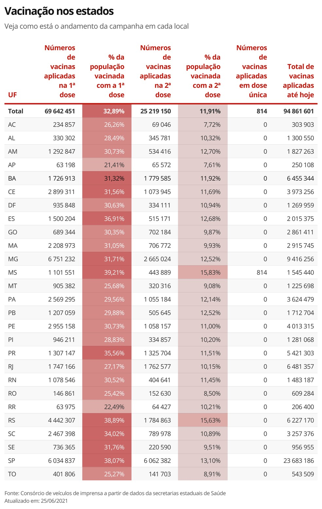

Últimas notícias sobre o coronavírus no Brasil e no mundo
O Brasil registrou 1.547 mortes por Covid-19 nas últimas 24 horas, totalizando neste sábado (26) 512.819 óbitos desde o início da pandemia. Com isso, a média móvel de mortes nos últimos 7 dias chegou a 1.707 -abaixo de 2 mil pelo quinto dia seguido.
Em comparação à média de 14 dias atrás, a variação foi de -15% e indica tendência de estabilidade nos óbitos decorrentes do vírus.Este é o quinto dia seguido de estabilidade após cinco dias em tendência de alta, quando a média havia voltado a ficar acima da casa dos 2 mil por alguns dias. O patamar elevadíssimo em que essa estabilidade ocorre, no entanto, ainda está longe de permitir comemorações.
Os números estão no novo levantamento do consórcio de veículos de imprensa sobre a situação da pandemia de coronavírus no Brasil, consolidados às 20h deste sábado. O balanço é feito a partir de dados das secretarias estaduais de Saúde.
De 17 de março até 10 de maio, foram 55 dias seguidos com essa média acima de 2 mil. No pior momento desse período, a média chegou ao recorde de 3.125, no dia 12 de abril.
O estado de Roraima não divulgou novos dados de mortes neste sábado. Segundo a secretaria, o sistema estadual que centraliza os números de óbitos não é alimentado pelos municípios aos finais de semana e feriados.
Nenhum estado apresenta tendência de alta nas mortes.
Em casos confirmados, desde o começo da pandemia, 18.384.150 brasileiros já tiveram ou têm o novo coronavírus, com 61.393 desses confirmados no último dia. A média móvel nos últimos 7 dias foi de 71.872 novos diagnósticos por dia. Isso representa uma variação de +8% em relação aos casos registrados na média há duas semanas, o que indica tendência de estabilidade nos diagnósticos.


Vacinação no Brasil
Levantamento junto a secretarias de Saúde aponta que 70.325.677 pessoas tomaram a primeira dose e 25.191.955 a segunda, além de outras -51.235 que receberam o imunizante de dose única, segundo dados do consórcio de veículos de imprensa.
O percentual de brasileiros totalmente imunizados contra a Covid está em 11,92% da população do país. Já estão com as duas doses da vacina 25.191.955 pessoas, além de outras 51.235 que receberam o imunizante de dose única, segundo dados do consórcio de veículos de imprensa, divulgado às 20h deste sábado (26).
A primeira dose foi aplicada em 70.325.677 pessoas, o que corresponde a 33,21% da população. A vacina da Janssen, que é de dose única, começou a ser aplicada na sexta-feira (25) no Brasil. Neste sábado, mais estados já usaram o imunizante: Bahia (com 21.890 doses aplicadas), Espírito Santo (16.509), Mato Grosso do Sul (12.501), Mato Grosso (300) e São Paulo (35).
A informação é resultado de uma parceria do consórcio de veículos de imprensa, formado por G1, "O Globo", "Extra", "O Estado de S.Paulo", "Folha de S.Paulo" e UOL. Os dados de vacinação passaram a ser acompanhados a partir de 21 de janeiro.

Boletim Diário da COVID-19 no estado do Paraná
A Secretaria de Estado da Saúde divulgou neste sábado (26) mais 5.692 casos confirmados e 57 mortes - referentes aos meses ou semanas anteriores e não representam a notificação das últimas 24 horas.
VACINAS
O Paraná já aplicou 5.474.342 doses,sendo 4.144.788 da primeira dose e 1.329.554 da segunda dose contra a Covid-19 até às 14h15 de 26 de junho - dados do Sistema de Informação do Programa Nacional de Imunizações.
INTERNADOS
2.384 pacientes com diagnóstico confirmado de Covid-19 estão internados. São 1.935 pacientes em leitos SUS (967 em UTI e 968 em enfermaria) e 449 em leitos da rede particular (236 em UTI e 213 em enfermaria). Há outros 2.532 pacientes internados, considerados casos suspeitos de infecção pelo Sars-CoV-2.

AÇÃO INTEGRADA ENTRE POLÍCIA MILITAR E PREFEITURA ACABA COM FESTA CLANDESTINA EM PÉROLA.
Na madrugada deste sábado (26) uma ação integrada entre a Prefeitura de Pérola, Vigilância Sanitária, Conselho Tutelar, Polícia Militar de Pérola, ROTAM (25º BPM), Comando de Policiamento da Unidade (CPU) e Polícia Militar de Xambrê acabaram com uma festa clandestina com mais de 100 pessoas, incluindo menores de idade, em uma chácara na Rodovia entre Pérola-Xambrê.
A Prefeitura de Pérola agradece o apoio de toda a Polícia Militar, especialmente ao Tenente Schnaider (CPU), e aos policiais de plantão: Soldado Teles e Soldade André pelo ótimo trabalho prestado a comunidade.
Para assistir ao vídeo, clique aqui.